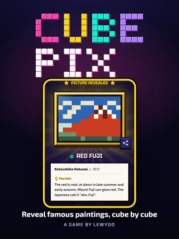
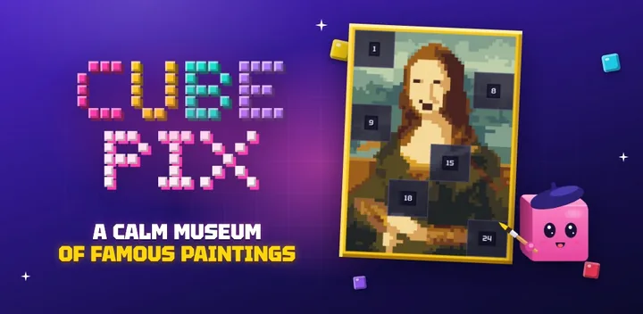
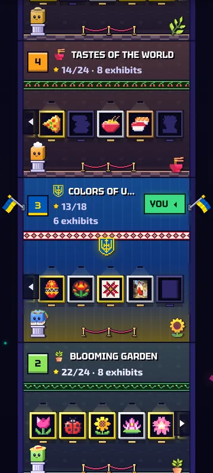
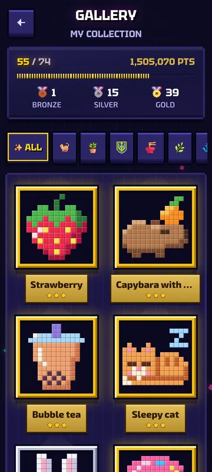

Press kit
CubePix press kit
Everything you need to write about, stream or make a video of CubePix: the facts, the story, the logo, artwork and screenshots. Free to use for coverage.
About the game
Reveal famous paintings, cube by cube.
CubePix is a calm pixel art puzzle set in a museum tower. Fill the cubes layer by layer, and famous paintings, wonders of the world and little pixel treasures come to life.
Every picture is a cube colour-by-number: tap or swipe across the cubes of your colour, chain them for more points, and the picture is revealed layer by layer. It ends with a museum label and a short, true story: who painted it, when, and one fact worth telling a friend. The biggest masterpieces are mosaics of many pieces, and a big canvas opens whole: zoom in to paint, zoom out to see it all.
The museum grows floor by floor, from a cosy corner of sleepy cats and bubble tea to the Hall of Masterpieces with Hokusai, Van Gogh, Vermeer and Leonardo. Pix, a little cube who loves to paint, keeps you company and earns new costumes along the way. There are no timers, no energy and no game over, and the game plays offline.
- Real masterpieces. Public-domain paintings by Hokusai, Van Gogh, Monet, Vermeer and Leonardo, rebuilt by hand in cubes.
- A story in every frame. Each picture comes with a museum label and a short, true fact.
- Calm by design. No timers, no energy, no game over and no leaderboards. Plays offline.
- Original music. Calm pieces written for the museum, played on real recorded instruments.
- Meet Pix. A little cube mascot with an interactive cartoon intro and costumes to earn.
- In the player’s language. The whole game is translated into every language listed above.
Logo and artwork
Logo, icon and key art
A transparent PNG logo, the app icon, the cover and key art. Please don’t change the logo’s colours or proportions.
 Logo · transparent PNG1554×921 · 40 KBPNG
Logo · transparent PNG1554×921 · 40 KBPNG App icon512×512 · 118 KBPNG
App icon512×512 · 118 KBPNG
 Key art3600×1890 · 596 KBJPG
Key art3600×1890 · 596 KBJPG
Banner1024×500 · 77 KBJPG

Screenshots
Screenshots
Real game screens, captured in the game. Portrait, phone resolution. (1080×2400)
 Main menu1080×2400 · 919 KBPNG
Main menu1080×2400 · 919 KBPNG The museum tower1080×2400 · 339 KBPNG
The museum tower1080×2400 · 339 KBPNG Revealing a picture1080×2400 · 377 KBPNG
Revealing a picture1080×2400 · 377 KBPNG The museum label1080×2400 · 595 KBPNG
The museum label1080×2400 · 595 KBPNG
Colours of Ukraine1080×2400 · 361 KBPNG
The gallery1080×2400 · 432 KBPNG


Using these materials
- ✓Use them in articles, reviews, videos, streams and social posts about CubePix.
- ✓Crop and resize screenshots and art to fit your layout.
- ✕Don’t alter the logo or use it to suggest an official partnership.
Need something else, like gameplay clips, a build, or an interview? Write to us: hello@lewydo.com
Music
All the music in CubePix is our own: calm pieces written for the museum and played on real recorded instruments (piano, harp, strings, clarinet). Want to use it in a video about the game? Write to us: hello@lewydo.com
About Lewydo
Lewydo is a two-person indie game studio from Ukraine. Vlad codes, Lilya designs. Together we make the games we love to play.